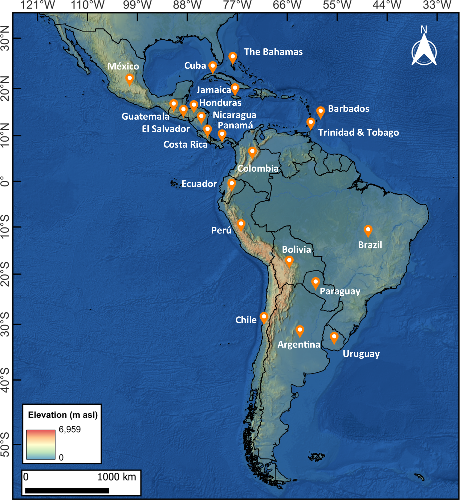

Tracer hydrology practices, challenges and opportunities across Latin America and the Caribean

Resumo em Português
A hidrologia de traçadores na América Latina e no Caribe avançou significativamente nas últimas décadas, em grande parte graças ao apoio sustentado da Agência Internacional de Energia Atômica (AIEA). As práticas atuais mostram que as aplicações de isótopos estáveis da água e o monitoramento de precipitação-água subterrânea estão no núcleo da maioria das redes, fornecendo informações valiosas sobre mecanismos de recarga, conectividade entre águas subterrâneas e superficiais, rastreamento de poluição e variabilidade climática.Apesar desses avanços, persistem desafios críticos, incluindo registros de monitoramento curtos e fragmentados, captura limitada de eventos extremos, acessibilidade restrita aos dados e barreiras persistentes relacionadas a financiamento, capacidade analítica e fraca integração com políticas públicas. A melhoria da comunicação científica emerge como uma necessidade urgente para transformar resultados técnicos em conhecimento acionável que informe tomadores de decisão e empodere comunidades. Existem oportunidades para construir sobre o legado da AIEA por meio da sustentação de redes de longo prazo, diversificação das aplicações de traçadores, mobilização de ciência cidadã nos esforços de monitoramento, expansão da capacidade de modelagem e laboratorial e defesa do compartilhamento de dados FAIR entre usuários finais. O fortalecimento da colaboração regional, a melhoria da comunicação e o maior engajamento com políticas públicas podem elevar a hidrologia de traçadores ao status de pilar da governança regional da água e da resiliência hidroclimática.